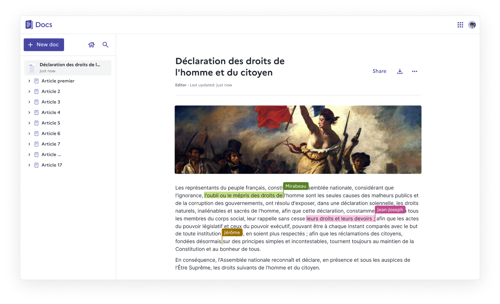
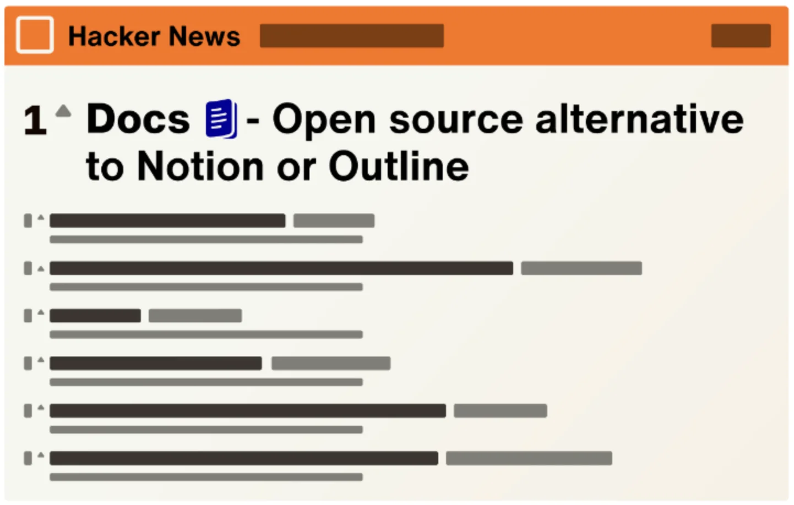
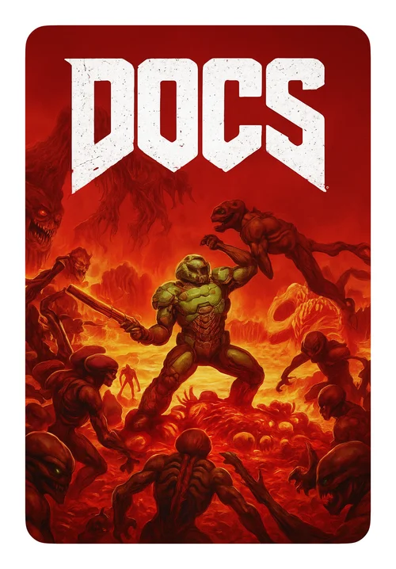
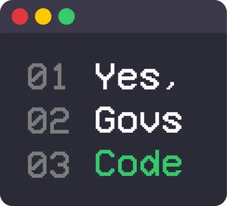
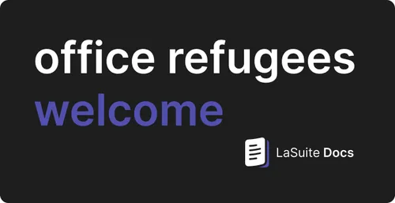

The document editor that turns your team's content into knowledge.
Docs is an open-source text editor: web-native, made for real-time collaboration, cleanly structured documents and sub-documents with full ownership of your data. Run it yourself, or use any public instance run by the community.

Learn the core principles
What you'll notice within your first few minutes in Docs.
Everything a team needs to write together
From a quick shared note to a full team knowledge base — Docs scales with how you actually work.
Real-time collaboration
Live cursors, presence, and comments — edit the same document with your team at the same time, no conflicts.
Block-based editing
Slash commands, tables, columns, collapsible sections and media — clean formatting without fighting the editor.
Knowledge organization
Nest documents into sub-pages and hierarchies to build a real, searchable knowledge base for your team.
Granular access control
Decide who can view, comment, or edit — restricted access, external guests, or a public link.
Import & export
Bring in .docx and .md files, and export to .docx, .odt or .pdf whenever you need to.
Version history
Every save is a version. Roll back to any earlier state of a document without losing a thing.
Fast search
Find any document in seconds, and pin the ones you reach for most.
Own your data
Self-host on your own infrastructure. Nothing about Docs requires trusting a third party with your content.
Built for accessibility
Actively worked toward WCAG / RGAA compliance, with accessibility improvements shipped every release.
AI that helps you write — on your terms
Summarize, rewrite, fix typos, translate, or turn notes into slides. AI is a feature you can turn on, not a requirement to use Docs.
Bring your own model
AI actions can be wired to the LLM provider you choose when you run your own instance.
The reference instance, as an example
docs.la-suite.eu routes AI requests through Mistral models via Albert API, hosted in SecNumCloud — one privacy-conscious way to configure it, not the only one.
Open-source observability
Response quality can be monitored with Langfuse, an open-source, self-hostable observability tool.
Not a black box — a commons you can run yourself
Docs isn't tied to one company or one server. Anyone can read the code, deploy it, and shape where it goes.
100% open source
MIT licensed. Read it, audit it, fork it — nothing is hidden behind the product.
Self-hostable anywhere
Docker Compose, Kubernetes, Nix, or YunoHost. Your infrastructure, your rules.
No lock-in
Export to PDF, Word, ODT or Markdown whenever you want. Your content leaves as easily as it came in.
Verified Digital Public Good
Recognized by the DPG Alliance as software that serves the public interest, for anyone to adopt.
A Hacker News sensation
For two days in March 2025, Docs sat at #1 on the Hacker News front page — and the GitHub stars never really stopped climbing after that.

GitHub stars over time
Real history, pulled from the GitHub API.
Built by 67 people, not one company
Every avatar below is a real person who has shipped a fix, a feature, or a review to Docs on GitHub.
Built in the open, funded in the open
What's planned for Semester 2, 2026 — and the public institutions funding it.
Point to a document section with direct links to blocks
Stay up to date with mentions and notifications
Migrate your LibreOffice documents with .odt imports
Track who did what with change attribution
Write and display equations and diagrams
Find a document via content search
Suggest document improvements
Organize your documents with Drive
We also make kick-ass stickers
A few of the ones currently stuck to our laptops.



Two ways in
Kick the tires on a public instance today, or stand up your own in a few commands.
Use a public instance
No installation needed. Open a live demo document, or browse instances that community members and organizations already run and make public.
Self-host your own
Docs runs on Docker Compose, Kubernetes, or community-maintained methods like Nix and YunoHost.
# clone & bootstrap git clone https://github.com/suitenumerique/docs.git cd docs make bootstrap FLUSH_ARGS='--no-input' make run
Opens at localhost:3000. Requires Docker Compose & GNU Make.
Questions people actually ask
Can I really self-host Docs?+
Is there a hosted version I can just use?+
How does saving work?+
Can I work offline?+
Can I restore an older version?+
Who maintains Docs?+
Pick your path
Open a document in seconds, or clone the repo and make it yours — either way, it's yours to keep.